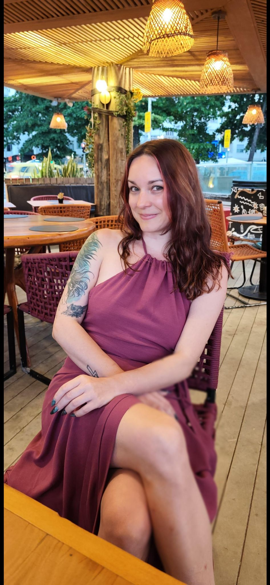
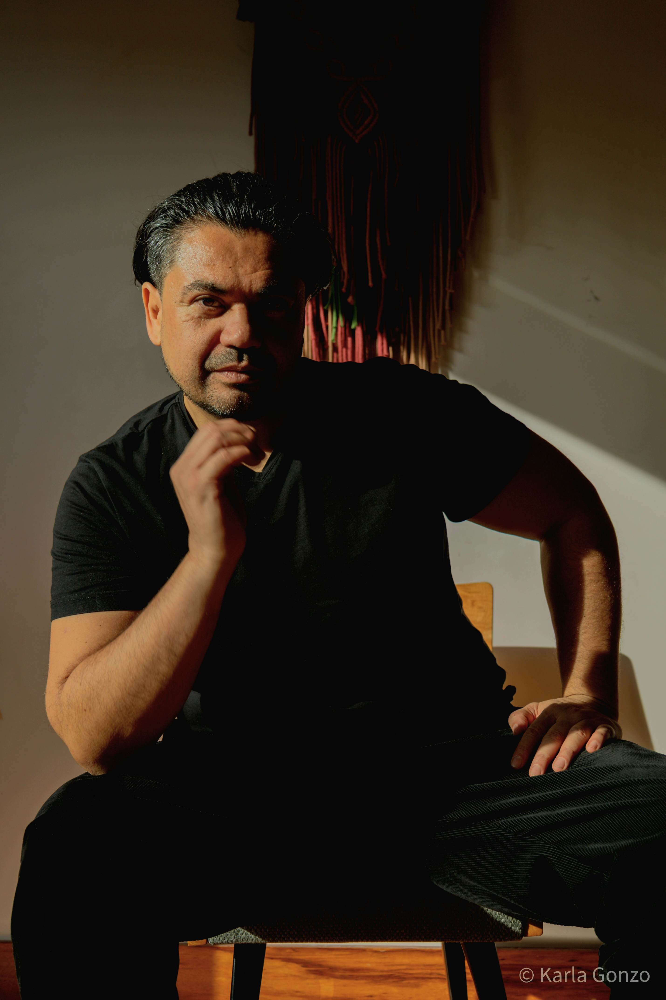

Warsztaty świadomej bliskości, intymności i głębszego połączenia prowadzone przez Joannę Filek i Bodhi Michaela. Conscious intimacy, connection, and embodiment workshop hosted by Joanna Filek and Bodhi Michael. Bevisst intimitet, tilknytning og kroppslig workshop ledet av Joanna Filek og Bodhi Michael.
Jasność i bezpieczeństwo od samego początku. Clarity and safety from the very start. Klarhet og sikkerhet fra starten av.
To NIE JEST impreza seksualna. Nie ma tu miejsca na przypadkowe zachowania. It is NOT a sexual party. There is no room for casual or unguided behavior. Det er IKKE et seksuelt parti. Det er ikke rom for tilfeldige eller uveiledede oppførsler.
To PROWADZONA przestrzeń doświadczenia, w której eksplorujemy obecność, granice i świadomą bliskość. It IS a GUIDED, held space for exploring presence, connection, boundaries, and conscious intimacy. Det ER en LEDET, holdt rom for å utforske nærvær, tilknytning, grenser og bevisst intimitet.
Każde doświadczenie opiera się na komunikacji, Twoich granicach i wzajemnym szacunku. Every experience is based on communication, your boundaries, and mutual respect. Hver opplevelse er basert på kommunikasjon, dine grenser og gjensidig respekt.
Łączymy wiedzę o emocjach z pracą z ciałem i autentycznym kontaktem. We combine knowledge about emotions with body work and authentic contact. Vi kombinerer kunnskap om følelser med kroppsarbeid og autentisk kontakt.
Nie musisz mieć wcześniejszego doświadczenia. Wszystko tłumaczymy krok po kroku. No previous experience needed. We explain everything step by step. Ingen tidligere erfaring nødvendig. Vi forklarer alt trinn for trinn.
Wybierz doświadczenie, które najbardziej rezonuje z Twoimi potrzebami. Choose the experience that resonates most with your current needs. Velg opplevelsen som resonnerer mest med dine nåværende behov.

Cacao & Cuddles

Shadow & Edge Work
Nie. Świątynia Tantry nie jest wydarzeniem seksualnym. To przestrzeń świadomej pracy z obecnością, relacją i ciałem. No. Tantra Temple is not a sexual event. It is a space for conscious work with presence, relationship and body. Nei. Tantra Tempel er ikke en seksuell hendelse. Det er et rom for bevisst arbeid med nærvær, relasjon og kropp.
Tak. Zapraszamy zarówno osoby solo, jak i pary. Wspólnie tworzymy bezpieczną grupę. Yes. We welcome both solo individuals and couples. Together we create a safe group. Ja. Vi velkommer både enslige individer og par. Sammen skaper vi en trygg gruppe.
Nie. Uczestnictwo odbywa się według własnego komfortu. Nagość jest opcjonalna i nigdy wymuszona. No. Participation is based on your comfort level. Nudity is optional and never enforced. Nei. Deltagelsen er basert på komfortnivået ditt. Nakenhet er valgfritt og aldri tvunget.
Wybierz opcję dla siebie. Liczba miejsc ograniczona do 25 osób. Choose an option for yourself. Number of places limited to 25 people. Velg et alternativ for deg selv. Antall plasser begrenset til 25 personer.

Psycholog i Sexuolog. Wspiera osoby i pary w budowaniu autentycznych relacji i pokonywaniu wstydu. Psychologist and Sexologist. Supports individuals and couples in building authentic relationships and overcoming shame. Psykolog og seksuolog. Støtter individer og par i å bygge autentiske relasjoner og overvinne skam.
Śledź na Instagramie Follow on Instagram Følg på Instagram @joaboutsex
Teacher embrodimentu z 15-letnim stażem. Specjalista od pracy z cieniem i regulacji układu nerwowego. Embodiment teacher with 15 years of experience. Specialist in shadow work and nervous system regulation. Embodiment lærer med 15 års erfaring. Spesialist i skygger arbeid og nervesystem regulering.
Śledź na Instagramie Follow on Instagram Følg på Instagram @conscious.wolf
Cacao & Cuddles
Wejdź w święte miejsce, gdzie spotykają się obecność, połączenie i świadoma intymność. Razem tworzymy bezpieczny kontener zabawy i autentycznego wyrażania siebie — miejsce, aby ponownie połączyć się z radością w sobie, u innych i w społeczności. Step into a sacred space where presence, connection, and conscious intimacy meet. Together, we co-create a container of safety, play, and raw authentic expression — a place to reconnect with the bliss within ourselves, others and community. Ta et skritt inn i et hellig sted der nærvær, tilknytning og bevisst intimitet møtes. Sammen skaper vi en trygg beholder for lek og ekte uttrykk — et sted å koble til igjen glede i seg selv, hos andre og i fellesskapet.
Świątynia to świadoma, święta przestrzeń, która oddaje hołd boskiemu iskrom w każdym z nas. Tutaj łączymy świadomość siebie i innych z jasną, pełną szacunku komunikacją o granicach, zgodzie i negocjacjach wraz z naszymi erotycznymi, zmysłowymi i pierwotnymi energiami i pragnieniami. Razem przyjmujemy, praktykujemy i świętujemy te niezbędne umiejętności wraz z bardziej subtelnością energii serca, umysłu i ducha. A Temple is a conscious, sacred space that honors the divine spark in each of us. Here we merge conscious awareness of ourselves and others with clear, respectful communication about boundaries, consent, and negotiation together with our erotic, sensual, and primal energies and desires. Together we welcome, practice and celebrate these essential foundational skills along with the more subtle energies of the heart, mind, and spirit. En Tempel er et bevisst, hellig sted som hedrer den guddommelige gnisten i hver av oss. Her fletter vi sammen bevissthet om oss selv og andre med klar, respektfull kommunikasjon om grenser, samtykke og forhandlinger sammen med våre erotiske, sanselige og instinktive energier og ønsker. Sammen velkommer vi, praktiserer og feirer disse essensielle grunnleggende ferdighetene sammen med de mer subtile energiene i hjertet, sinnet og ånden.
Świątynia to miejsce postrzegania i wyrażania, spokoju i ruchu, łączenia i puszczenia, oddania i zabawy. To przestrzeń, w której objmujemy wszystkie części Siebie i pamiętamy kim naprawdę jesteśmy. W swoim rdzeniu Świątynia służy rozwijaniu świadomego, bezpiecznego, miłościwego, intymnego i zmysłowego połączenia z samym sobą. Z tej zakotwiczonej przestrzeni możemy wybrać się w autentyczne połączenie z innymi. The Temple is a place of noticing and of expression, stillness and movement, connecting and letting go, devotion and play. It is a space to embrace all parts of our Self and to remember who we truly are. At its core, the Temple is about developing a conscious, safe, loving, intimate, and sensual connection with yourself first. From this grounded place, we may then choose to experience authentic connection with others. Tempel er et sted for observasjon og uttrykk, stillhet og bevegelse, tilknytning og overlating, hengivenhet og lek. Det er et rom for å omfavne alle deler av Oss selv og huske hvem vi egentlig er. I kjernen handler Tempel om å utvikle en bevisst, trygg, kjærlig, intym og sanselig tilknytning til deg selv først. Fra dette forankrede stedet kan vi så velge å oppleve autentisk tilknytning med andre.
Dla początkujących i doświadczonych praktyków — singli lub par, wszystkich tożsamości i orientacji. Niezależnie od tego, czy to Twoja pierwsza Świątynia, czy byłeś już na wielu wcześniej, zaproszenie jest takie samo: przyjdź z otwartością, ciekawością i szacunkiem. Nie potrzeba wcześniejszego doświadczenia, wystarczy chęć nauki, komunikacji i szacunku do siebie i innych. Świadomie pracujemy z oddechem, dźwiękiem, ruchem, intencją i energią — łącząc energię serca i seksualną. W Świątyni nie ma seksu. Żadnego fizycznego penetracji dowolnego rodzaju. Nagość jest opcjonalna. Każda praktyka to zaproszenie, nigdy oczekiwanie. For beginners and experienced practitioners alike — singles or couples, all identities and orientations. Whether this is your first Temple or you have attended many before, the invitation is the same: come with openness, curiosity, and respect. No prior experience is needed, only a willingness to learn, communicate, and honor yourself and others. We consciously work with breath, sound, movement, intention, and energy — including the merging of heart-centred and sexual energy. There is no sex in the Temple. No physical penetration of any kind. Nudity is optional. Every practice is an invitation, never an expectation. For nybegynnere og erfarne praksisutøvere — enslige eller par, alle identiteter og orienteringer. Enten dette er din første Tempel eller du har vært på mange før, er invitasjonen den samme: kom med åpenhet, nysgjerrighet og respekt. Ingen tidligere erfaring er nødvendig, bare villighet til å lære, kommunisere og ære deg selv og andre. Vi arbeider bevisst med pust, lyd, bevegelse, intensjon og energi — inkludert sammensmelting av hjerte og seksuell energi. Det er ingen sex i Tempel. Ingen fysisk penetrering av noe slag. Nakenhet er valgfritt. Hver praksis er en invitasjon, aldri en forventning.
Po pierwsze, poprzez prowadzony ruch, taniec, prace oddechowe, asany, medytacje, rytuały i kręgi dzielenia się, łączymy się z naszymi emocjami, pragnieniami i życiową energią. Te zabawne, proste i skuteczne praktyki pomagają nam: First, through guided movement, dance, breathwork, asanas, meditation, rituals, and sharing circles, we connect to our emotions, desires, and life-force energy. These fun, simple, and effective practices help us: Først, gjennom veiledet bevegelse, dans, pustearbeid, asanaer, meditasjon, rituale og delingskretser, kobler vi til våre følelser, ønsker og livskraft. Disse morsomme, enkle og effektive praksisene hjelper oss:
Podczas tej pierwszej prowadzonej części wszystkie interakcje są starannie zarządzane z naciskiem na połączenie z sobą najpierw, potem powoli uczymy się komunikować granice, pragnienia i zgodę z inną osobą. WSZYSTKIE wspólne doświadczenia w Świątyni oparte są na wzajemnej zgodzie. Każda osoba odpowiada za szacunek zarówno do własnych granic, jak i granic innych przez cały czas. During this first guided portion, all interactions are carefully held with a focus on connecting to oneself first, then slowly learning how to communicate boundaries, desires, and consent with another person. ALL shared experiences in the Temple are based on mutual agreement. Each person is responsible for honoring BOTH their own boundaries and the boundaries of others throughout every interaction. Under denne første veiledede delen håndteres alle interaksjoner nøye med fokus på å koble til seg selv først, så sakte lære hvordan man kommuniserer grenser, ønsker og samtykke med en annen person. ALLE delte opplevelser i Tempel er basert på gjensidig enighet. Hver person er ansvarlig for å ære BÅDE sine egne grenser og andres grenser gjennom hele interaksjonen.
Na końcu przechodzimy do Przestrzeni Otwartej — niesterowanej, swobodnej części Świątyni — gdzie uczestnicy są zaproszeni do przeniesienia tego, czego się nauczyli, w świadome intymne interakcje i doświadczenia skupione na sercu z partnerem lub innymi w przestrzeni. Ta część wymaga jasnej, pełnej szacunku komunikacji o granicach i zgodzie oraz negocjacji wokół dotyku. To miejsce, aby zademonstrować troskę, bezpieczeństwo, emocjonalną dojrzałość i osobistą odpowiedzialność. Finally, we move into the Open Space — the unguided free-flow portion of the Temple — where participants are invited to bring what they have learned into conscious intimate interactions and heart-centred experiences with their partner or others in the space. This part requires clear, respectful communication about boundaries and consent, along with negotiation around consensual agreement around touch. This is the space to demonstrate, care, safety, emotional maturity, and personal responsibility. Til slutt går vi inn i Åpent Rom — den ikke-veiledede fri-strøm-delen av Tempel — hvor deltakerne blir invitert til å bringe det de har lært inn i bevisste intime interaksjoner og hjerte-fokuserte opplevelser med partneren eller andre i rommet. Denne delen krever klar, respektfull kommunikasjon om grenser og samtykke, sammen med forhandling rundt samtykkende avtale om berøring. Dette er rommet for å demonstrere omsorg, trygghet, emosjonell modenhet og personlig ansvar.
Świątynia odbywa się w otwartej, współdzielonej przestrzeni. Nie ma prywatności. To miejsce, aby swobodnie wyrażać siebie i innych odpowiedzialnie z szacunkiem, troską i dojrzałością. Świątynia odbywa się w języku angielskim z polskim tłumaczeniem. Wsparciem są doświadczeni asystenci, którzy wspierają ciebie i przestrzeń. The Temple is held in an open, shared space. There is no privacy. It is a place to freely, express yourself and others responsibly with respect, care, and maturity. The Temple is held in English with Polish translation. We are supported by experienced assistants to support you and the space. Tempel holdes i et åpent, delt rom. Det er ingen privatliv. Det er et sted å fritt uttrykke seg selv og andre ansvarlig med respekt, omsorg og modenhet. Tempel holdes på engelsk med polsk oversettelse. Vi støttes av erfarne assistenter for å støtte deg og rommet.
Prosimy o rejestrację przez Messengera Joanny Filek / WhatsApp +48 733777542. Pełna wpłata jest należna przy rejestracji. Twoje miejsce jest potwierdzone dopiero po otrzymaniu wpłaty. Liczba miejsc ograniczona. Please register with Joanna Filek Messenger / WhatsApp +48 733777542. Full payment is due at registration. Your place is confirmed only once payment is received. Limited spaces available. Vennligst registrer deg med Joanna Filek Messenger / WhatsApp +48 733777542. Full betaling er forfall ved registrering. Din plass er bekreftet kun når betaling er mottatt. Begrensede antall plasser tilgjengelig.
Jeśli czujesz powołanie do udziału, ale masz problemy finansowe, prosimy o pytanie Joanny o alternatywne opcje finansowe lub wymiany energetycznej. If you feel called to attend but are financially challenged, please ask Joanna about alternative financial or energy exchange options. Hvis du føler deg kalt til å delta, men har økonomiske utfordringer, vennligst spør Joanna om alternative økonomiske eller energiutvekslingsalternativer.
Żadnych telefonów i żadnych nagrywania wideo podczas Świątyni. Filmy promocyjne są robione TYLKO PRZED rozpoczęciem Świątyni i tylko za zgodą. No telephones and no video recording during the Temple. Promotional videos are only taken BEFORE the Temple begins and only with permission. Ingen telefoner og ingen videoopptak under Tempel. Promosjonsvideoer tas kun FØR Tempel begynner og kun med tillatelse.
Zalecane do przyniesienia: Recommended to Bring: Anbefalt å ta med:
100% zwrotu pieniędzy za anulowania do 3 tygodni przed wydarzeniem. Mniej niż 3 tygodnie przed wydarzeniem nie podlega zwrotowi, choć bilety mogą zostać przeniesione na inną osobę. Szczególne okoliczności są rozpatrywane indywidualnie. 100% refund for cancellations up to 3 weeks before the event. Less than 3 weeks before the event is non-refundable, though tickets may be transferred to another person. Special circumstances considered. 100% refusjon for avbestillinger opp til 3 uker før arrangementet. Mindre enn 3 uker før arrangementet er ikke refunderbart, selv om billetter kan overføres til en annen person. Spesielle omstendigheter vurderes.
Każdy uczestnik musi w pełni zrozumieć i zaakceptować porozumienia Świątyni, w tym zgodę, granice, brak penetracji, otwartą przestrzeń współdzieloną i godne zachowanie. Jeśli te warunki nie są zgodne, z przyjemnością zwrócimy bilet przed uczestnictwem. Anyone attending must fully understand and agree to the Temple agreements, including consent, boundaries, no penetration, open shared space, and respectful conduct. If these conditions are not aligned, we are fully happy to refund the ticket before attendance. Alle som deltar må fullt ut forstå og godta Tempel-avtalene, inkludert samtykke, grenser, ingen penetrering, åpent delt rom og respektfull oppførsel. Hvis disse betingelsene ikke er i tråd, gir vi gjerne tilbake pengene før deltakelse.
Przyjdź taki, jaki jesteś. Odejdź bardziej świadomy, połączony i żywy! Come as You Are. Leave More Conscious, Connected, and Alive! Kom som du er. Dra mer bevisst, forbundet og levende!
Shadow & Edge Work
„Akt przestępstwa przebija bariery strachu i wstydu, a ten moment wyzwolenia tworzy ładunek energii, na którym możemy jeździć do wysokości rozkoszy i ekstatycznych doświadczeń. Potwierdza również poczucie jaźni jako niezależne od norm społecznych, poczucie indywidualności." - John Hawken "The act of transgression breaks through the barriers of fear and shame, and that moment of liberation creates a charge of energy on which we can ride to heights of pleasure and ecstatic experience. It also asserts a sense of self as independent of social norms, a sense of individuality." — John Hawken "Handlingen med å bryte lover bryter gjennom barrierene av frykt og skam, og det øyeblikket av frigjøring skaper en ladning av energi som vi kan ri til høyder av nytelse og ekstatisk opplevelse. Det fastslår også en følelse av selv som uavhengig av sosiale normer, en følelse av individualitet." — John Hawken
Są części nas, które pozostają uśpione pod wstydem, strachem, kontrolą i uwarunkowaniem. Są też części nas, które obudzają się poprzez prawdę, pragnienie, poddanie się, oddanie i wcielone odwagę. Ta Świątynia to głęboki warsztat transformacyjny wykorzystujący świętą moc, polaryzację i świadomy gra jako ścieżkę do wolności, intymności i autentycznej mocy. There are parts of us that remain asleep beneath shame, fear, control, and conditioning. There are also parts of us that awaken through truth, desire, surrender, devotion, and embodied courage. This Temple is a deep transformational workshop using sacred power, polarity, and conscious play as a pathway into freedom, intimacy, and authentic power. Det finnes deler av oss som forblir sovende under skam, frykt, kontroll og betingelser. Det finnes også deler av oss som våkner gjennom sannhet, ønske, overgivelse, hengivenhet og inkarnert mot. Denne Tempel er et dypt transformasjonelt workshop som bruker hellig makt, polaritet og bevisst spill som en vei til frihet, intimitet og autentisk makt.
To nie jest seks party. To nie jest występ. To nie jest terapia. To starannie prowadzona przestrzeń transformacyjna, gdzie eros staje się lekarstwem, prawda staje się wcielona, a połączenie staje się świętym. This is not a sex party. It is not a performance. It is not therapy. It is a carefully facilitated transformational space where eros becomes medicine, truth becomes embodied, and connection becomes sacred. Dette er ikke et sexparti. Det er ikke en forestilling. Det er ikke terapi. Det er et nøye facilitert transformasjonelt rom hvor eros blir medisin, sannhet blir inkarnert og tilknytning blir hellig.
Poprzez prowadzone praktyki, ruch, prace oddechowe, pracę zgody, regulację układu nerwowego, narzędzia uwolnienia emocjonalnego, rytuały, integrację cienia i świadome dynamiki relacji, uczestnicy są zaproszeni do obudzenia głębszych warstw siebie i kroku w stronę większej wolności, miłości i suwerenności. Through guided practices, movement, breathwork, consent work, nervous system regulation, emotional release tools, ritual, shadow integration, and conscious relational dynamics, participants are invited to awaken deeper layers of self and step into greater freedom, love, and sovereignty. Gjennom veiledede praksiser, bevegelse, pustearbeid, samtykkearbeid, nervesystem regulering, følelsesmessige frigjøringsverktøy, ritualer, skyggeintegrasjon og bevisst relasjonelle dynamikker, blir deltakerne invitert til å vekke dypere lag av selv og ta et skritt mot større frihet, kjærlighet og suverenitet.
To, co tradycyjnie kojarzyliśmy z BDSM - strach, ból, winę, osąd, wstyd lub zniekształcenie - może zacząć przekształcać się w akceptację, podekscytowanie, przyjemność, odżywienie, uwolnienie i satysfakcję. What we may have traditionally associated with BDSM—fear, pain, guilt, judgment, shame, or distortion—can begin to transform into acceptance, excitement, pleasure, nourishment, release, and satisfaction. Det vi tradisjonelt har assosiert med BDSM - frykt, smerte, skyld, dom, skam eller forvrengning - kan begynne å forvandles til aksept, spenning, nytelse, næring, frigjøring og tilfredshet.
Ta Świątynia jest dla emocjonalnie dojrzałych jednostek i par, które czują powołanie do eksploracji głębi, prawdy, intymności i transformacji w sobie i z innymi. Jest szczególnie dopasowana dla tych, którzy: This Temple is for emotionally mature individuals and couples who feel called to explore depth, truth, intimacy, and transformation within themselves and with others. It is especially aligned for those who: Denne Tempel er for følelsesmessig modne individer og par som føler seg kalt til å utforske dybde, sannhet, intimitet og transformasjon innenfor seg selv og med andre. Det er spesielt i tråd for de som:
Witamy osoby indywidualne, pary i uczestników LGBTQIA+ wszystkich płci, orientacji i stylów relacji. Musisz mieć zdolność do jasnej komunikacji, szanującego negocjowania i czci zarówno własnych granic, jak i granic innych. Konieczne jest, abyś już rozpoczął własną wewnętrzną lub pracę z cieniem wokół ograniczeń, poddania się, odbierania i dawania intensywności, dyscypliny, kontroli i podatności. We welcome individuals, couples, and LGBTQIA+ participants of all genders, orientations, and relationship styles. You must have the capacity to communicate clearly, negotiate respectfully, and honor both your own boundaries and the boundaries of others. It is necessary that you have already begun your own inner or shadow work around restriction, surrender, receiving and giving intensity, discipline, control, and vulnerability. Vi velkommer individer, par og LGBTQIA+-deltakere av alle kjønn, orienteringer og relasjonsstiler. Du må ha kapasitet til å kommunisere tydelig, forhandle respektfullt og ære både dine egne grenser og andres grenser. Det er nødvendig at du allerede har begynt ditt eget indre eller skyggearbeid rundt restriksjon, overgivelse, mottak og givende intensitet, disiplin, kontroll og sårbarhet.
Ostatecznie, istotne jest, abyś był skupiony na sercu i genuinely dbał o siebie i innych. Musisz być otwarty na pracę ze wszystkimi płciami i angażowanie się w różne dynamiki w ramach ćwiczeń. Nie wymagana jest wcześniejsza doświadczenie BDSMU. Dojrzałość emocjonalna, samoświadomość i szacunek do granic są niezbędne. Wszystko opiera się na zaproszeniu. Zawsze masz swobodę do udziału, pauzy, świadka lub rezygnacji. Nagość jest opcjonalna. Ultimately, it is vital that you are heart-centered and genuinely care for yourself and others. You must be open to working with all genders and engaging with different dynamics within the exercises. No previous BDSM experience is required. Emotional maturity, self-awareness, and respect for boundaries are essential. Everything is invitation-based. You are always free to participate, pause, witness, or opt out. Nudity is optional. Til slutt er det avgjørende at du er hjerteorientert og genuint bryr deg om deg selv og andre. Du må være åpen for å arbeide med alle kjønn og engasjere deg i forskjellige dynamikker innenfor øvelsene. Ingen tidligere BDSM-erfaring kreves. Følelsesmessig modenhet, selvbevissthet og respekt for grenser er avgjørende. Alt er basert på invitasjon. Du er alltid fri til å delta, ta pause, være vitne eller velge bort. Nakenhet er valgfritt.
Ta Świątynia może nie być odpowiednia, jeśli jesteś: This Temple may not be suitable if you are: Denne Tempel kan være uegnet hvis du er:
Cenimy suwerenność, dojrzałość, troskę, życzliwość, szacunek, osobistą i relacyjną odpowiedzialność i odpowiedzialność. We value sovereignty, maturity, care, kindness, respect, personal and relational accountability and responsibility. Vi verdsetter suverenitet, modenhet, omsorg, kjærlighet, respekt, personlig og relasjonell ansvarlighet og ansvar.
Zaczynamy od stworzenia zakotwiczonej i bezpiecznej przestrzeni Świątyni poprzez zgodne, indywidualne i zbiorowe porozumienia. Następnie poprzez praktyczne narzędzia i prowadzone ćwiczenia, ustanawiamy obecność, zaufanie, kulturę zgody, bezpieczeństwo emocjonalne i wcieloną świadomość. Będziesz wspierany w regulacji układu nerwowego, połączeniu z ciałem, wyrażeniu prawdy, wyjaśnieniu granic i otwarciu autentycznych ścieżek połączenia. We begin by creating a grounded and safe Temple container through consensual, individual and collective agreements. Then through practical tools and guided exercises, we establish presence, trust, consent culture, emotional safety, and embodied awareness. You will be supported to regulate your nervous system, connect to your body, express truth, clarify boundaries, and open authentic pathways of connection. Vi begynner med å skape en forankret og trygg Tempel-beholder gjennom samtykkende, individuelle og kollektive avtaler. Deretter gjennom praktiske verktøy og veiledede øvelser, etablerer vi nærvær, tillit, samtykke-kultur, følelsesmessig trygghet og inkarnert bevissthet. Du vil bli støttet til å regulere ditt nervesystem, koble til din kropp, uttrykke sannhet, avklare grenser og åpne autentiske veier til tilknytning.
Stamtąd wyruszamy w transformacyjną podróż Świątyni eksplorując dynamiczne świętej mocy, polaryzację, pragnienie, poddanie się, oddanie, wyrażenie i świadomy eros. Te praktyki są starannie prowadzone i oparte na wyborze, pozwalając każdemu uczestnikowi zaangażować się na poziomie, który wydaje się dopasowany. W miarę jak wieczór się rozwija, strukturalna przestrzeń miękczy się w swobodniejszy przepływ Świątyni - intencyjne miejsce dla kontynuowanego połączenia, wyrażenia, integracji, świętowania, spokoju lub zabawy w granicznych, wzajemnie-zgodnych, negocjowanych, uzgodnionych, szanujących, troskliwych, bezpiecznych i odpowiedzialnych interakcjach. Noc kończy się ugruntowaniem, refleksją i końcowym kręgiem dzielenia się. From there, we journey into transformational Temple practices exploring sacred power dynamics, polarity, desire, surrender, devotion, expression, and conscious eros. These practices are carefully guided and choice-based, allowing each participant to engage at the level that feels aligned. As the evening unfolds, the structured container softens into a freer Temple flow —an intentional space for continued connection, expression, integration, celebration, stillness, or play in boundaried, mutually-consensual, negotiated, agreed upon, respectful, caring, safe, and responsible interactions. The night closes with grounding, reflection and a final sharing circle. Derfra reiser vi inn i transformasjonelle Tempel-praksiser som utforsker hellige maktdynamikker, polaritet, ønske, overgivelse, hengivenhet, uttrykk og bevisst eros. Disse praksisene er nøye veiledet og valgbasert, noe som lar hver deltaker engasjere seg på nivået som føles i tråd. Etter hvert som kvelden utfolder seg, mykner den strukturerte beholderen opp til en friere Tempel-strøm — et intenst rom for fortsatt tilknytning, uttrykk, integrasjon, feiring, stillhet eller lek i begrensede, gjensidig-samtykkende, forhandlede, avtalte, respektfulle, omsorgsfulle, trygge og ansvarlige interaksjoner. Natten avsluttes med forankring, refleksjon og en endelig delingskrets.
Wielu uczestników odchodzi z: Many participants leave with: Mange deltakere drar med seg:
Skontaktuj się z Joanną, aby zarejestrować się przez Messengera / WhatsApp / Blik: +48 667 777 687. Pełna wpłata jest należna w momencie rejestracji. Twoje miejsce jest zarezerwowane tylko po otrzymaniu pełnej wpłaty. Liczba miejsc ograniczona. Jeśli czujesz powołanie do przyjścia do Świątyni, ale masz trudności finansowe, skontaktuj się z nami, aby omówić alternatywne opcje. Contact Joanna to register via Messenger / WhatsApp / Blik: +48 667 777 687. Full payment is due at the time of registration. Your place is reserved only upon full payment. Limited spaces available. If you feel called to come to the Temple but are experiencing financial difficulty, please contact us to discuss alternative options. Kontakt Joanna for å registrere via Messenger / WhatsApp / Blik: +48 667 777 687. Full betaling er forfall ved registrering. Din plass er reservert kun ved full betaling. Begrenset antall plasser tilgjengelig. Hvis du føler deg kalt til å komme til Tempel men opplever økonomiske vanskeligheter, vennligst kontakt oss for å diskutere alternative alternativer.
Świątynia to święte miejsce, więc prosimy ubrać się odpowiednio. Brak perfum. Olejki eteryczne są mile widziane. To wydarzenie bez alkoholu i bez narkotyków rekreacyjnych. The Temple is a sacred space, so please dress appropriately. No perfume. Essential oils are welcome. This is a no alcohol and no recreational drugs event. Tempel er et hellig sted, så vennligst kle deg passende. Ingen parfyme. Essensielle oljer er velkomne. Dette er et arrangement uten alkohol og uten rekreasjonsmidler.
Świątynia to świadoma, święta przestrzeń, która oddaje hołd boskiemu iskrom w każdym z nas. To miejsce, gdzie nasze pierwotne, erotyczne i twórcze energie spotykają się z subtelniejszymi prądami serca, głosu, intuicji i ducha. Tutaj jesteśmy zaproszeni do odpoczynku, bycia w pełni obecnym, świętowania naszej istoty i wyrażania życia w oddaniu. A Temple is a conscious, sacred space that honors the divine spark within each of us. It is where our primal, erotic, and creative energies meet the subtle currents of the heart, voice, intuition, and spirit. Here, we are invited to rest, be fully present, celebrate our essence, and express life-force energy in devotion. En Tempel er et bevisst, hellig sted som hedrer den guddommelige gnisten inni hver av oss. Det er der våre primitive, erotiske og kreative energier møter de subtile strømmene i hjertet, stemmen, intuisjonen og ånden. Her blir vi invitert til å hvile, være helt til stede, feire vår essens og uttrykke livskraft i hengivenhet.
To sanktuarium, gdzie możemy eksplorować intymność, dotyk i pragnienie z jasnością, granicami i czcią. W Świątyni wstyd, strach i lęk mogą rozpuścić się w akceptacji, radości, ekstazie i miłości. To miejsce transformacji, gdzie pamiętamy kim naprawdę jesteśmy. It is a sanctuary where we can explore intimacy, touch, and desire with clarity, boundaries, and reverence. In the Temple, guilt, shame, and fear can dissolve into acceptance, joy, ecstasy, and love. It is a place of transformation, where we remember who we truly are. Det er et helligdom hvor vi kan utforske intimitet, berøring og ønske med klarhet, grenser og ærbødighet. I Tempel kan skyld, skam og frykt oppløses i aksept, glede, ekstase og kjærlighet. Det er et sted for transformasjon, hvor vi husker hvem vi egentlig er.
Świątynia niesie czasową mądrość. Zaprasza nas do bycia widzianym i słuchanym, do podzielenia się wrażliwie, do czci naszych pragnień i do szacunku granicom innych. Razem uczymy się odzyskiwać niewinność, obecność i błogość prostego bycia. The Temple carries timeless wisdom. It invites us to be seen and heard, to share vulnerably, to honor our desires, and to respect one another’s boundaries. Together, we learn to reclaim innocence, presence, and the bliss of simply being. Tempel bærer tidløs visdom. Den inviterer oss til å bli sett og hørt, å dele sårbart, å ære våre ønsker og å respektere hverandres grenser. Sammen lærer vi å gjenvinne uskyld, nærvær og glede av å bare være.
100% zwrotu pieniędzy za anulowania do 2 tygodni przed wydarzeniem. Anulowania dokonane mniej niż 2 tygodnie przed wydarzeniem nie podlegają zwrotowi, choć możesz przenieść swój bilet na inną osobę. Szczególne okoliczności będą rozpatrywane indywidualnie. 100% refund for cancellations up to 2 weeks before the event. Cancellations made less than 2 weeks before the event are non-refundable, though you may transfer your ticket to another person. Special circumstances will be considered individually. 100% refusjon for avbestillinger opp til 2 uker før arrangementet. Avbestillinger gjort mindre enn 2 uker før arrangementet er ikke refunderbare, selv om du kan overføre billetten din til en annen person. Spesielle omstendigheter vil bli vurdert individuelt.
Niektóre doświadczenia rozrywką. Niektóre doświadczenia budzą. Ta Świątynia została zaprojektowana, aby obudzić i wcielić. Jeśli coś w Tobie tęskni za głębszą prawdą, swobodniejszą miłością, wcieloną mocą i głęboką transformacją - to jest dla Ciebie. Some experiences entertain. Some experiences awaken. This Temple is designed to awaken and embody. If something inside you longs for deeper truth, freer love, embodied power, and profound transformation—this is for you. Noen opplevelser underholder. Noen opplevelser vekker. Denne Tempel er designet for å vekke og inkarnere. Hvis noe inni deg lengter etter dypere sannhet, friere kjærlighet, inkarnert makt og dypgående transformasjon — dette er for deg.
Jeśli obecnie nie widzisz dogodnego terminu, możesz zostawić swoje dane. Skontaktuję się, gdy pojawi się możliwość konsultacji lub regularnego procesu terapeutycznego. If you don't currently see a convenient time, you can leave your details. I will contact you when consultation or regular therapeutic process opportunities arise. Hvis du ikke ser en passende tid nå, kan du legge igjen dine detaljer. Jeg vil kontakte deg når det oppstår muligheter for konsultasjon eller regelmessig terapeutisk prosess.
Ten formularz nie służy do kontaktu kryzysowego. Jeśli znajdujesz się w sytuacji bezpośredniego zagrożenia zdrowia lub życia, skontaktuj się z numerem alarmowym 112 lub najbliższą placówką medyczną. This form is not for crisis contact. If you are in a situation of immediate threat to health or life, contact emergency number 112 or the nearest medical facility. Dette skjemaet er ikke for krisekontakt. Hvis du er i en situasjon med umiddelbar trussel mot helse eller liv, kontakt nødnummer 112 eller nærmeste medisinske fasilitet.